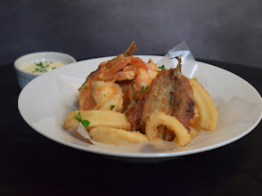
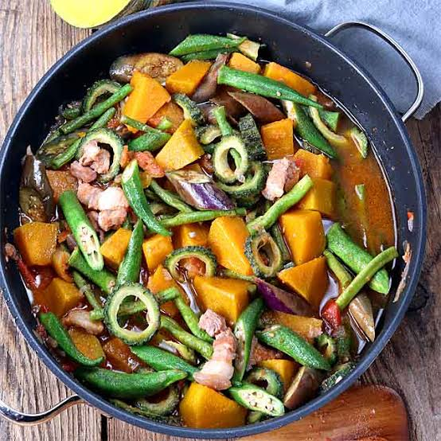
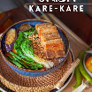
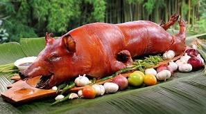
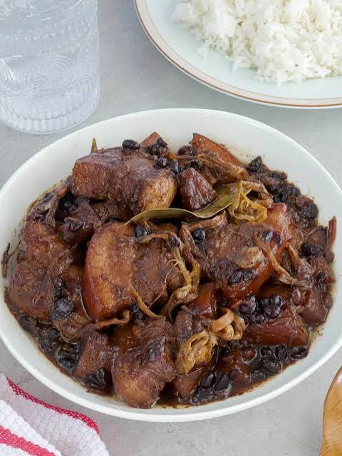
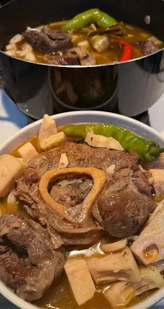
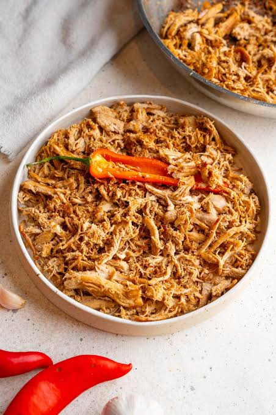
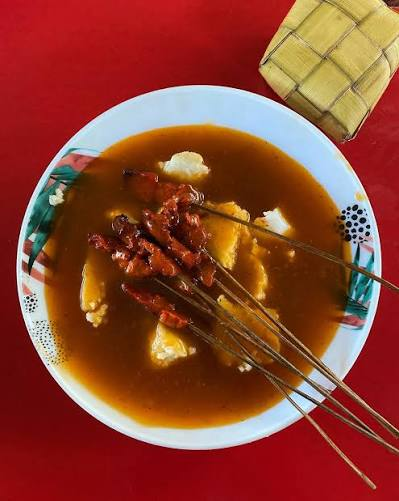
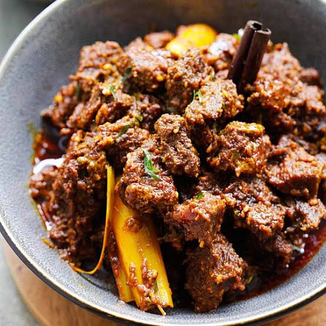

 TAAL (Cucina de Jardin) Savor freshly grilled liempo, chicken inasal, seafood, |
 PINAKBET A hearty vegetable stew with fresh vegetables and fermented fish paste. |
 Kare-Kare A hearty oxtail stew with vegetables in a rich peanut sauce. |
 Lechon de Cebu A famous roasted pig with crispy skin and aromatic herb stuffing." |
 Humba A sweet, savory braised pork belly slow-cooked with soy sauce and garlic. |
 Kansi A tangy beef soup with batuan fruit, beef shank, and bone marrow |
 Pastil A banana leaf-wrapped rice dish with spiced chicken or beef. |
 Satti A beach destination with water activities, wildlife, and a historic naval base. |
 Beef Rendang A rich, slow-cooked beef curry with coconut milk. |